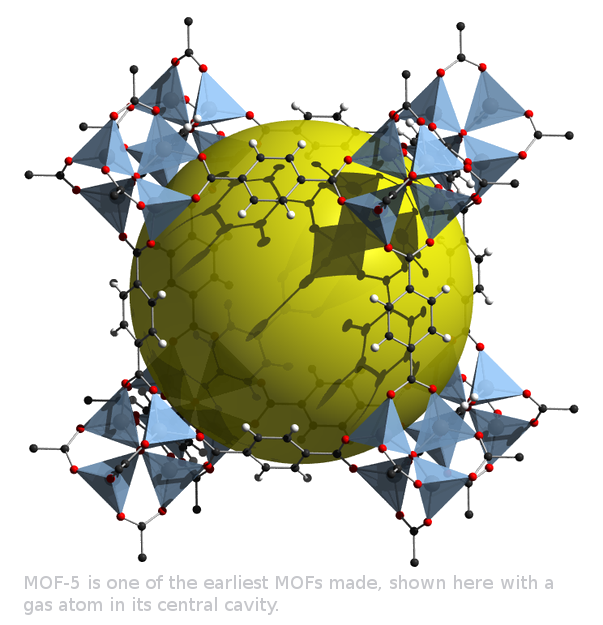

A web-module for metal-organic frameworks (MOFs) using Monte Carlo (MC) method.
This website and associated files were developed by Maxime Usdin with the help and supervision of Dr. Yongchul G. Chung and Prof. Randall Q. Snurr of the Department of Chemical and Biological Engineering at Northwestern University.
Files are hosted by GitHub here, and protected under this license.
This site aims to serve as an educational and reasearch tool to provide an online platform to visualize Metal-Organic Frameworks and calculate their physical properties.
All functions run locally using Javascript exclusively. If operation is slow, consider closing all other tabs or restarting the browser.
Files are hosted by GitHub here, and protected under this license.
This site aims to serve as an educational and reasearch tool to provide an online platform to visualize Metal-Organic Frameworks and calculate their physical properties.
All functions run locally using Javascript exclusively. If operation is slow, consider closing all other tabs or restarting the browser.

Each page of this website allows for various aspects of MOFs to be explored:
- The MOF Explorer allows you to perform Monte Carlo simulations to calculate the void fraction and surface area of a structure, or determine its pore size distribution using a non-random algorithm. Details of how calculations are performed may be found on the Main Page. You may also explore your own structures using the file upload on the MOF Explorer page.
- The Demo Module allows you to perform Monte Carlo simulations on a sphere in a box. This simple case provides insight into statistical modelling and can be used to find an optimal number of probes at which the analytical and the calculated solutions converge.
- The MOF Maker allows you to assemble MOFs from metal and organic building blocks. Opening MOF Explorer allows you to probe the physical properties of the new structure.